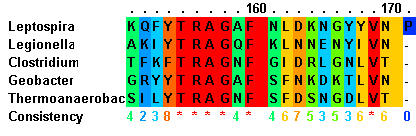
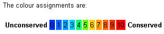
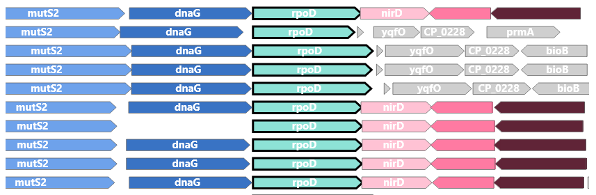
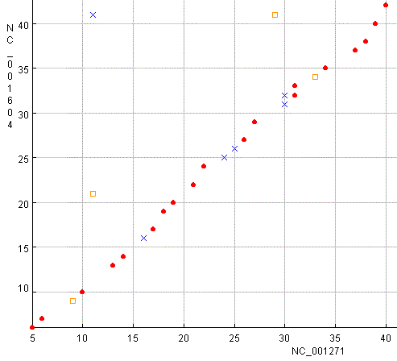
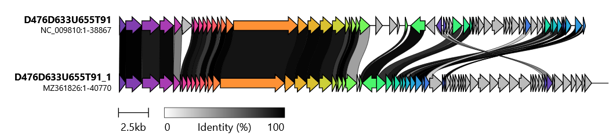

Alignments
Compare Two Sequences
- LALIGN - (EMBL-EBI) finds multiple matching subsegments in two sequences. Provides one with % identity for different subsegments of the sequence.
- FFAS - The Fold and Function Assignment System. The profile of a user's protein can now be compared with ~20 additional profile databases. The user can, through a series of tabs, navigate multiple results pages, and also includes novel functionality, such as a dotplot graph viewer, modeling tools, an improved 3D alignment viewer and links to the database of structural similarities.
(Reference: Jaroszewski, L. et al. 2011. Nucleic Acids Res. 39(Web Server issue):W38-44) - SFESA (Shift to Fix secondary structure ElementS in Alignments) - is a web server for pairwise alignment refinement by secondary structure shifts.SFESA evaluates alignment variants generated by local shifts and selects the best-scoring alignment variant.
(Reference: Tong J et al (2015). Proteins. 83(3): 411-427). - LAST - provides a lot of control of data handling, along with dotplots and coloured alignments
(Reference: Kielbasa SM et al. Genome Res; 21(3): 487-93). - Wasabi - (Andres Veidenberg, University of Helsinki, Finland) is a browser-based application for the visualisation and analysis of multiple alignment molecular sequence data.
- VerAlign multiple sequence alignment comparison is a comparison program that assesses the quality of a test alignment against a reference version of the same alignments.
- PairAlign (EzBioCloud, Seoul National University, Republic of Korea)- pairwise nucleotide sequence alignment for nucleotide sequences < 5 kb it gives colour aligments and a similarity score based upon Myers and Miller (Global alignment)
- GeneWise (EMBL-EBI) - compares a protein sequence to a genomic DNA sequence, allowing for introns and frameshifting errors. Also available here.
- SIM - Alignment tool for protein (ExPASy, Switzerland) gives fragmented alignments similar to LALIGN.
- WebPRANK - server supports the alignment of DNA, protein and codon sequences as well as protein-translated alignment of cDNAs, and includes built-in structure models for the alignment of genomic sequences. The resulting alignments can be exported in various formats widely used in evolutionary sequence analyses. The webPRANK server also includes a powerful web-based alignment browser for the visualisation and post-processing of the results in the context of a cladogram relating the sequences, allowing (e.g.) removal of alignment columns with low posterior reliability. In addition to de novo alignments, webPRANK can be used for the inference of ancestral sequences with phylogenetically realistic gap patterns, and for the annotation and post-processing of existing alignments.
(Reference: Löytynoja, A., & Goldman, N. 2010. BMC Bioinformatics 11: 579). - BLAST2 (NCBI) - also useful for DNA sequence comparisons. Provides small graphic which is only of use with proteins or short DNA sequences.
Protein Sequence Similarity and Identity Scores
- EMBOSS supermatcher Use 10 and 0.5 as the defaults in the Gap opening penalty and Gap extension penalty, respectively.
- EMBOSS matcher - finds the best local alignments between two sequences
- FOLDALIGN - folds and aligns RNA structures (make a foldalignment) based on a lightweight energy model and sequence similarity. The current version makes pairwise fold alignments.
(Reference: J. H. Havgaard et al. 2005. Bioinformatics 21: 1815 - 1824).
Compare Multiple Sequences
BACKGROUND INFORMATION: There are two good on-line help sites for CLUSTAL W. These are
(a) On-line help for CLUSTAL(Wiki) and,
(b) Multiple sequence alignment, (Wiki)
- ClustalW - Multiple Sequence Alignment (EBI, United Kingdom). This provides one with a number of options for data presentation, homology matrices [BLOSUM (Henikoff), PAM (Dayhoff) or GONNET, and presentation of phylogenetic trees (Neighbor-Joining, Phylip or Distance). Sites offering ClustalW alignment are at the Kyoto University
- Clustal Omega - is a new multiple sequence alignment program that uses seeded guide trees and HMM profile-profile techniques to generate alignments.
(Reference: Sievers, F. et al. 2011. Molecular Systems Biology7 Article number: 539) - MAFFT Multiple sequence alignment and NJ / UPGMA phylogeny - I recently attempted to align thirteen 50kb bacteriophage genomes using ClustalW, not no success, MAFFT provided the alignment incredibly quickly. Unfortunately it would not generate a tree. The Clustal data was opened in ClustalX and the tree saved in default settings and visualized in FigTree
(Reference: Katoh, K. et al. 2002. Nucl. Acids Rese. 30:3059-3066) - LALIGN - part of VISTA Tools for Comparative Genomics
- PROBCONS - is a novel tool for generating multiple alignments of protein sequences. Using a combination of probabilistic modeling and consistency-based alignment techniques, PROBCONS has achieved the highest accuracies of all alignment methods to date. On the BAliBASE benchmark alignment database, alignments produced by PROBCONS show statistically significant improvement over current programs, containing an average of 7% more correctly aligned columns than those of T-Coffee, 11% more correctly aligned columns than those of CLUSTAL W, and 14% more correctly aligned columns than those of DIALIGN.
(Reference: C.B. Do et al. 2005. Genome Res. 15: 330-340). - webPRANK - incorporates phylogeny-aware multiple sequence alignment, visualisation and post-processing in an easy-to-use web interface.
(Reference: Löytynoja, A., & Goldman, N. 2010. BMC Bioinformatics. 11:579). - GUIDANCE2 - implements two different algorithms for evaluating confidence scores: (i) the heads-or-tails (HoT) method, which measures alignment uncertainty due to co-optimal solutions; (ii) the GUIDANCE method, which measures the robustness of the alignment to guide-tree uncertainty. The server projects the confidence scores onto the MSA and points to columns and sequences that are unreliably aligned. These can be automatically removed in preparation for downstream analyses.
N.B. Need at least 8 sequences
(Reference: Sela, I. 2015. Nucleic Acids Res. 43(Web Server issue):W7-W14). - SALIGN - automatically determines the best alignment procedure based on the inputs, while allowing the user to override default parameter values. Multiple alignments are guided by a dendrogram computed from a matrix of all pairwise alignment scores. When aligning sequences to structures, SALIGN uses structural environment information to place gaps optimally. If two multiple sequence alignments of related proteins are input to the server, a profile-profile alignment is performed.
(Reference: Braberg, H. et al. 2012. Bioinformatics. 28(15):2072-2073). - AlignMe (for Alignment of Membrane Proteins) is a very flexible sequence alignment program that allows the use of various different measures of similarity. Thesesimilarity measures include: substitution matrices, hydrophobicity scales and any kind of profiles (i.e. secondary structure predictions or transmembrane predictions).
(Reference: Khafizov K et al. 2014. Nucl. Acids Res. 42(W1), W246-W251) - PRALINE - is a multiple sequence alignment program with many options to optimize the information for each of the input sequences; e.g. global or local preprocessing, predicted secondary structure information and iteration capabilities.
(Reference: V.A. Simossis et al. (2005) Nucleic Acids Res. 33: 816-824).
Example of PRALINE output: - GeCoViz (Genome Context Vizualizer) - this online resource was built upon reference prokaryotic genomes that provides fast and interactive visualisation of custom genomic regions anchored by any target gene, which can be sought by either name, orthologous group (KEGGs, eggNOGs), protein domain (PFAM) or sequence.
(Reference: Botas, J. et al. 2022. Nucl. Acids Res. 50: W352–W357). - ConSurf is is a bioinformatics tool for estimating the evolutionary conservation of amino/nucleic acid positions in a protein/DNA/RNA molecule based on the phylogenetic relations between homologous sequences. The degree to which an amino (or nucleic) acid position is evolutionarily conserved is strongly dependent on its structural and functional importance; rapidly evolving positions are variable while slowly evolving positions are conserved.
(Reference: Yariv, B. et al. 2023. Protein Sci. 32: e4582). - MultAlin - Multiple sequence alignment by Florence Corpet (Institut National de la Recherche Agronomique (INRA), France). N.B. The results are presented in colour.
- Multiple Alignment - GeneBee service (Belozersky Institute of Physico-chemical Biology, Moscow State University, Russia) . N.B. This service also provides phylogenetic analysis of the data.
- PROMALS3D - constructs alignments for multiple protein sequences and/or structures using information from sequence database searches, secondary structure prediction, available homologs with 3D structures and user-defined constraints.
(Reference: Pei, J. et al. 2008. Nucleic Acids Res. 36(7): 2295-2300). - SANSparallel: interactive homology search against Uniprot - the webserver provides protein sequence database searches with immediate response and professional alignment visualization by third-party software. The output is a list, pairwise alignment or stacked alignment of sequence-similar proteins from Uniprot, UniRef90/50, Swissprot or Protein Data Bank. The stacked alignments are viewed in Jalview or as sequence logos. The database search uses the suffix array neighborhood search (SANS) method, which has been re-implemented as a client-server, improved and parallelized. The method is extremely fast and as sensitive as BLAST above 50% sequence identity.
(Reference: P. Somervuo & L. Holm. 2015. Nucl. Acids Res. 43 (W1): W24-W29). - DiAlign(Univ. Bielfeld, Germany) - "DIALIGN is a novel program for multiple alignment developed by Burkhard Morgenstern et al. While standard alignment methods rely on comparing single residues and imposing gap penalties, DIALIGN constructs pairwise and multiple alignments by comparing whole segments of the sequences."
- The Coffee Collection - T-Coffee (Aligns DNA, RNA or Proteins using the default T-Coffee), M-Coffee (Aligns DNA, RNA or Proteins by combining the output of popular aligners), R-Coffee (Aligns RNA sequences usingpredicted secondary structures), Expresso (Aligns protein sequences using structural information), PSI-Coffee (Aligns distantly related proteins using homology extension) and TM-Coffee (Aligns transmembrane proteins using homology extension).
(Reference: Di Tommaso. P. et al. 2011. Nucleic Acids Res. 39(Web Server issue: W13-17; Chang, J.M. et al. 2012. BMC Bioinformatics. 13 Suppl 4: S1)). - TM-Aligner - provides multiple sequence alignment for transmembrane proteins
(Reference: Bhat B et al. (2017) Scientific Reports 7: Article number: 12543). - LocARNA - Multiple Alignment of RNAs - is a tool for multiple alignment of RNA molecules. LocARNA requires only RNA sequences as input and will simultaneously fold and align the input sequences. LocARNA outputs a multiple alignment together with a consensus structure. For the folding it makes use of a very realistic energy model for RNAs as it is by RNAfold of the Vienna RNA package (or Zuker's mfold). For the alignment it features RIBOSUM-like similarity scoring and realistic gap cost.
(Reference: C. Smith et al. 2010. Nucl. Acids Res. 38: W373-377). - CARNA is a tool for multiple alignment of RNA molecules. CARNA requires only the RNA sequences as input and will compute base pair probability matrices and align the sequences based on their full ensembles of structures. Alternatively, you can also provide base pair probability matrices (dot plots in .ps format) or fixed structures (as annotation in the FASTA alignment) for your sequences. If you provide fixed structures, only those structures and not the entire ensemble of possible structures is aligned. In contrast to LocARNA, CARNA does not pick the most likely consensus structure, but computes the alignment that fits best to all likely structures simultaneously. Hence, CARNA is particularly useful when aligning RNAs like riboswitches, which have more than one stable structure.
(Reference: A. Dragos et al. 2012. Nucleic Acids Reseach 40: W49-W53) - Web-Beagle: a web server for the pairwise global or local alignment of RNA secondary structures.
(Reference: E. Mattei et al. 2015. Nucl. Acids Res. 43 (W1): W493-W497)




Alternative Presentations of Alignments
- BOXSHADE - accepts a wide variety of file formats and allows the requester considerable flexibility in defining the output appearance (colour and arrangement as well as format). It is also available for downloading here.
- ESPript 3.0 - (Universite Lyon, France) - is a program which renders sequence similarities and secondary structure information from aligned sequences for analysis and publication purpose. This requires that you save your alignment as a *.aln file. Good control over output appearance and format is available (ps, tiff and gif).
(Reference: Robert X. & Gouet P. 2014. Nucl. Acids Res. 42 (W1), W320-W324). - Multiple Align Show - (Bioinformatics.org/The Open Lab; University of Massachusetts Lowell) allows considerable choice in colouring alignments.
Sequence Comparison Between Two Genomes
- D-GENIES – for Dot plot large Genomes in an Interactive, Efficient and Simple way – is an online tool designed to compare two genomes. It supports large genome and you can interact with the dot plot to improve the visualisation.
(Reference: Cabanettes F, Klopp C. (2018) PeerJ 6: e4958). - JDotter - A Java Dot Plot Viewer (Viral Bioinformatics Resource , University of Victoria, Canada) - a dot matrix plotter for Java. Produces similar diagrams to the above mentioned programs, but with better control on output. Alternatively use Dotlet JS (SIB Swiss Institute of Bioinformatics)
- YASS - perform DNA local alignments with results in dotplot and tabular form
(Reference: L.Noe & G. Kucherov. 2005. Nucl. Acids Res. 33: W540-W543). - VectorBuilder Sequence Dot Plot - Dot plots show sequence alignments on a two-dimensional plot, where one sequence is placed on the X axis, and the other on the Y axis. Analysis occurs by aligning a portion of the sequence based on window size (default is analysis every 10 bases), and if the mismatches are at or below the limit (default limit is 0), the tool will place a dot at the aligned X and Y coordinates
- EMBOSS dotmatcher - produces class dot plots.
- VISTA - VISualization Tools for Alignments (Lawrence Berkeley National Laboratory and US Department of Energy Joint Genome Institute, U.S.A.) - this site provided access to four programs: mVISTA - align and compare your sequences from multiple species; gVISTA - compare your sequences with several whole genome assemblies. It will automatically find the ortholog, obtain the alignment and VISTA plot; wgVISTA - align sequences up to 10Mb long (finished or draft) including microbial whole-genome assemblies; and, Phylo-Vista - analyze multiple DNA sequence alignments of sequences from different species while considering their phylogenic relationships.
(Reference: Frazer KA et al. Nucleic Acids Res. 2004; 32 (Web Server issue):W273-9) - GeneOrder (D. Seto, Bioinformatics & Computational Biology, George Mason Univ., U.S.A.) is ideal for comparing small GenBank genomes (up to 2 Mb). Each gene from the Query sequence is compared to all of the genes from the Reference sequence using BLASTP. There are two display formats: graphical and tabular. Currently the graph is an applet and must be saved as a "SCREEN SHOT".
- GeneOrder 4.0 (D. Seto, Bioinformatics & Computational Biology, George Mason Univ., U.S.A.) is designed to can be used to compare the gene order between two bacterial genomes
(Reference: Mahadevan P. & Seto D. 2010. BMC Research Notes 3:41). -
CoreGenes (D. Seto & P. Mahadevan, Bioinformatics & Computational Biology, George Mason University, U.S.A) - tallies the total number of genes in common between the two genomes being compared; displays the percent value of genes in common with a specific genome; determines the unique genes contained in a pair of proteomes. CoreGenes 3.5 & CoreGenes 5.0 offer the ability to analyze multiple proteomes. I have extensively used this set of resources in the classification of bacterial viruses.
- If you have a a gbk file for a phage which has not yet been deposited in GenBank you can use these instructions to convert your data into CoreGenes format for use here.
- CoreGenes 5.0: A Webserver For The Determination Of Core Genes From Sets Of Viral And Bacterial Genomes (Padmanabhan Mahadevan, University of Tampa, FL, USA) - allows up to 20 GenBank accession numbers to be manually entered or using the "File Upload" feature >20 accession numbers can be assessed. The program will provide Bidirectional Best Hit, OrthoMCL or COGTriangle results. This program has proved very useful in recent studies on the classification of bacterial viruses.
- CAGECAT - the online CompArative GEne Cluster Analysis Toolbox consists of claster and clinker which generate publication-quality gene cluster comparison figures.
(Reference: Gilchrist CLM & Chooi Y-H. 2021. Bioinformatics 37(16): 2473-2475). On this website it is possible to choose protein comparison (clinker) or DNA comparison (cblaster). Below is a clinker diagram showing relatedness between a pair of phage proteomes. clinker is also available here.



Meta-analysis
- JABAWS 2 - provides web services for multiple sequence alignment, prediction of protein disorder, and aminoacid conservation conveniently packaged to run on your local computer, server or cluster. JABAWS v2.0introduces protein disorder prediction services based on DisEMBL, IUPred, Ronn, GlobPlot and proteinsequence alignment conservation measures calculated by AACon. A new multiple sequence alignment service forClustal Omega is also provided, in addition to standard JABAWS:MSA services for Clustal W, MAFFT, MUSCLE,TCOFFEE and PROBCONS. JABA Web Services can be accessed from the Jalview desktop application and providemultiple alignment and sequence analysis calculations limited only by your own local computing resources.
(Reference: Troshin, P.V. 2011. Bioinformatics. 27(14):2001-2002).
Updated: December, 2025